History Page
History of Frutiger Aero
This section is a brief explanation of the history of the Frutiger Aero aesthetic, from what led
to its rise in popularity, up to its downfall and eventual revival on social media. For a quick
explanation of the term Frutiger Aero, jump to the Introduction section.
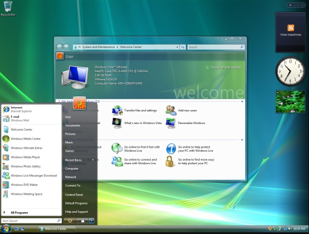
Introduction to Frutiger Aero
Before we delve into the history of "Frutiger Aero", we need to understand what it is even referring
to. The term, coined in 2017, is used to define or categorize a certain aesthetic that was present
from approximately 2005 up to 2013 in graphic design, internet aesthetics, user interfaces, and
other media.
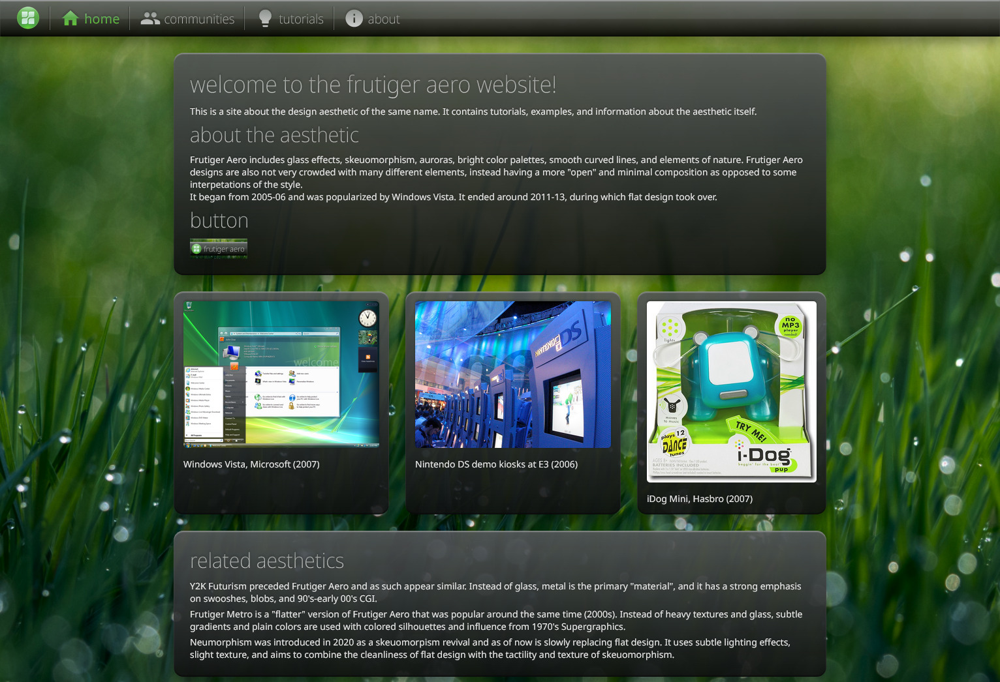
The name of the aesthetic was created by the Consumer Aesthetics Research Institute, a collective of
researchers and designers that are specialized in categorizing consumer aesthetics from the 1970s
onwards.
The word "Frutiger" comes from the typefaces of the same name designed by Adrian Frutiger
(1928-2015, R.I.P), a Swiss typeface designer responsible for fonts commonly seen in airports,
transportation, and train stations. Those fonts would inspire computer fonts during the 2000s,
notably Segoe UI which was used in Windows Vista onwards. The second part of the aesthetic's name
"Aero" refers to the design guidelines for Windows Vista and Windows 7, which embraced a futuristic,
glossy, and transparent glass look.
Outside of computer operating systems, the aesthetic can be identified in game consoles such as the
PS VITA, the PSP, PS3, Xbox 360 (Blades dashboard), Wii, Wii U, and some others. It can also be seen
in toys such as the iDog from Sega, some architectural projects, like Poste Italiane in 2007,
McDonald's flagship restaurant by SHH, London, Amgen Inc., in South Francisco and O2 Flagship Store
in Munich's Marienplatz to count a few. It can also be seen in phones that incorporated
skeuomorphism, and stock imagery, among other things.
On the web, during the middle 2000s to early 2010s, glossy interfaces that incorporated reflections,
gradient, and skeuomorphism were often seen. At the time, it was called Web 2.0, but some referred
to it as Web 2.0 Gloss.
Early Development (2001-2005)
Design trends come and go, and each decade had its own distinct look and feel. With the birth of
World Wide Web, technology would grow to take a completely different importance in our lives.
At the start of the new millennium, thanks to the progress of technology in the sector of computing,
operating system manufacturers such as Microsoft and Apple could experiment with more innovative
graphical user interfaces that would make using computers easier and more pleasing than ever before.
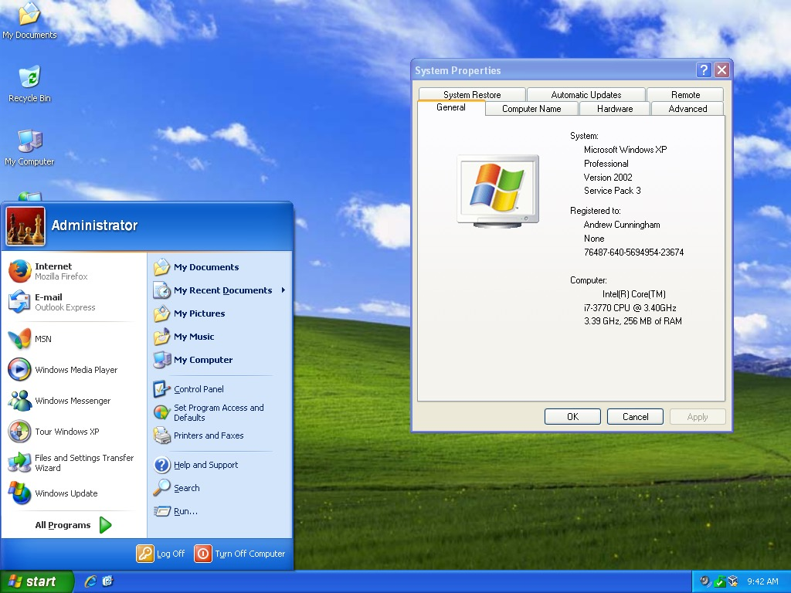
In 2001 Windows XP by Microsoft came to the scene with the Luna theme, which was a more friendly and
playful look in contrast to the previous 9x iterations of Windows with their gray, flat and simple
interfaces, as it featured a vibrant blue accent color on the default theme and used gradients.
It was accompanied by the "Bliss" Wallpaper, originally titled "Bucolic Green Hills", it is a
photograph of a vineyard that was cleared due to a phylloxera infestation taken in 1996 by Charles
O'Rear. The photograph displays rolling hills with a clear blue sky with mountains far in the
background. It almost looks utopian, unreal, or dream-like.
The widespread use of Windows XP with Bliss as the default wallpaper in the years to come probably
contributed to popularizing the use of nature and greenery in tech, advertisements, posters, etc.
that would come in the following years.
More importantly, this operating system showed an effort to appear more friendly and welcoming to the
average user, providing a more comforting environment to discover a new digital world. However, the
interface of Windows XP was not without its critics, who called its Luna design style "Fisher-Price"
looking and toy-like. Still, XP would be Microsoft's longest lasting operating system, only reaching
end of life in 2014.
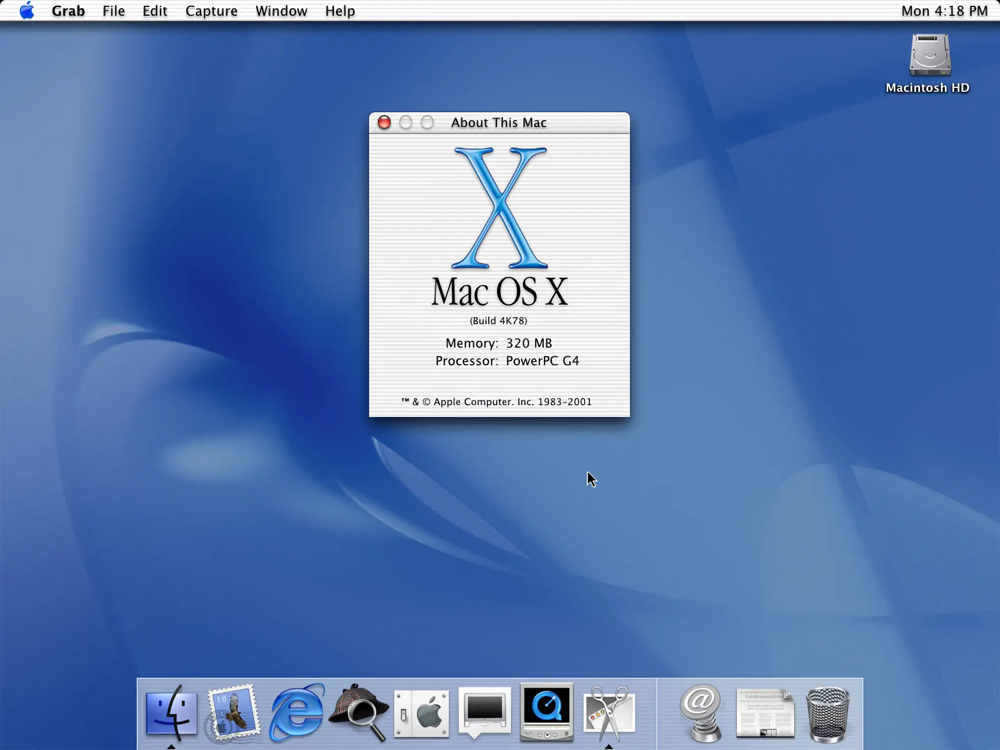
A few months before Windows XP in 2001, Apple had released their own new unique interface in
Mac OS X 10.0, introducing the Aqua design style, with elements of the interface mimicking the
effect of water droplets, and a use of reflection effects and translucency. As indicated by its name,
Aqua was based on the theme of water. Its first appearance in a commercial product was in July 2000
with the release of iMovie 2.
A very innovative interface at the time, it would inspire other manufacturers such as Microsoft to
pursue similar-looking interfaces in the future.
Both Apple and Microsoft tried to appeal to the public with pleasing, beautiful interfaces that took
full advantage of newer computer graphic capabilities, often mimicking real life elements.
Unlike the 90s, when interfaces and tech looked more gray and silvery (retrospectively called the
Y2K era), things started to look more colorful. There was genuine optimism and excitement at the time
in the general public about the possibilities offered by technology and its possible benefits on
humanity and it was certainly reflected in the media of the time.
Development of Windows Aero (2005-2009)
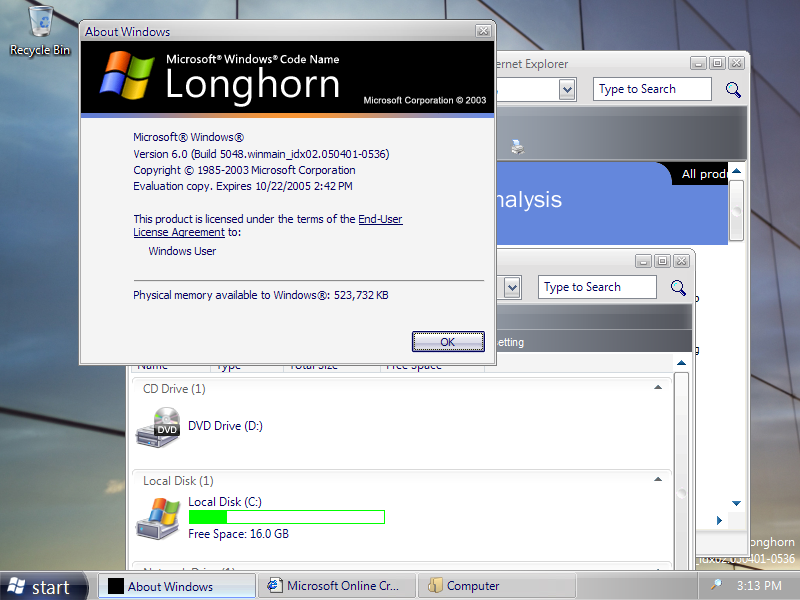
Microsoft's next operating system, codenamed "Longhorn" was planned to release sometime late in
2003, originally intended to be a minor release between Windows XP (codenamed "Whistler") and a
bigger release codenamed "Blackcomb", Longhorn grew in scope until it became the next major release
of Windows instead.
The ambitions for the project grew constantly, causing numerous delays and a bloated codebase.
The situation became so bad that in the summer of 2004 the project was reset, discarding years of
hard work from engineers. The project would start fresh with the Windows Server 2003 codebase as a
new foundation, which was also used in some 64-bit releases of Windows XP.
Longhorn would eventually be renamed to "Vista" for the final release. An unprecedented beta-test
program ensued involving hundreds of thousands of volunteers and companies. Between September 2005
and October 2006, Microsoft released regular Community Technology Previews (CTP) to beta testers and
two release candidates to the general public.
The post-reset build 5048 of Windows Longhorn would introduce a new visual interface design, called
"AERO", standing for Authentic, Energetic, Reflective, and Open.
While many parts of the user interface remained the same as previous iterations of Windows, it would
incorporate a new glassy look, with reflections, and a more 3D look. Cleartype anti-aliasing was now
enabled across all surfaces by default. Development of Windows Vista concluded with the November 8,
2006 announcement of its completion by co-president of Windows development, Jim Allchin.
When Windows Vista was finally released to the public in 2007, it was seen for many as a
disappointment. Many of the promised features of Longhorn were discarded, and what was left was not
deemed "game-changing" enough for most people to switch from XP. The new Aero interface was very
demanding on the hardware of the time, and many computers that did not meet the minimum requirements
were branded with the "Vista Capable" stickers. This led many customers to return to Windows XP due
to bad performance.
Adding insult to injury, it also had many bugs and driver issues on release, many peripherals and
software that worked fine on XP would break on Vista. The combination of problems and the bad timing
led to the failure of the operating system.
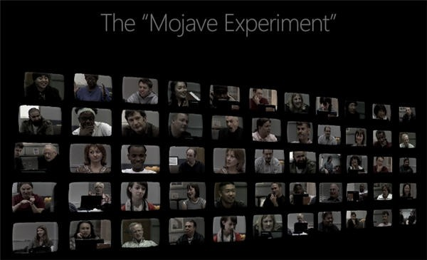
Microsoft would try to do damage control with their advertising campaign called "Mojave Experiment".
It was an effort to change what they felt like was an unfair negative consumer perception of their
operating system. It involved participants that had a negative view of Vista (without having tried
it) being shown a demonstration of a new operating system which they called "Mojave", which
participants thought was awesome. At the end of the experiment, it would be revealed that Mojave was
actually Windows Vista, much to their surprise.
However, it's true that after service packs and some updates, Windows Vista fixed many of the issues
that caused it to be hated and became very usable. However, most people did not know this and Vista's
reputation would not improve despite Microsoft's efforts.
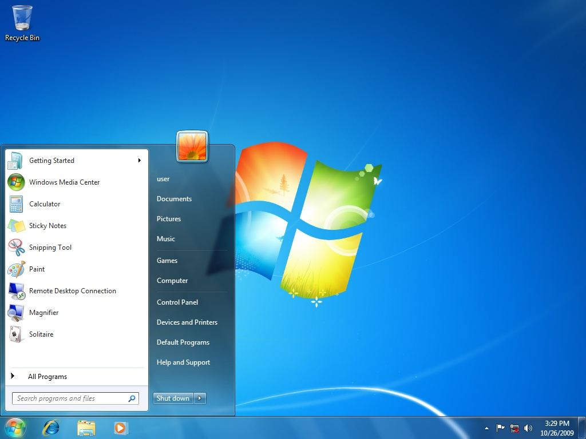
Redemption for Microsoft came a few years later in 2009, with Windows 7. Contrary to popular belief,
the previous codenames of Blackcomb and/or Vienna refer to an earlier effort intended to succeed
Windows Vista, which was canceled in early 2007 due to time and feature constraints, and was instead
replaced with the Windows 7 project.
In all aspects an improvement over Vista, the new operating system focused on providing a familiar yet
improved experience. While very similar to Windows Vista, Windows 7 brought many enhancements to the
desktop experience, notably the Taskbar receiving a major overhaul. Windows 7 finally surpassed
Windows XP in market share in April 2011.
Stock Imagery and Advertisements
During the early to late 2000s, HD Television and new display technologies such as Plasma TV were
starting to take off in popularity, and vibrant, abstract photography and videos of nature and the
ocean would often be displayed in stores and advertisements to show the full capabilities of the
displays. Analog TV would also give way to Digital TV, which increased image quality for millions of
people.
Stock imagery featuring utopian environments would also become very popular in the early 2000s up to
the early 2010s, often showing green grassy plains with tall buildings, giant globes of earth. These
are the pictures we often associate with Frutiger Aero. They showed a green and sustainable future
where man, technology, and nature could co-exist in harmony.
The earliest example goes as far back as the year 2000, with the CD-ROM collection made by Orion
Press, called Tomorrow, Blue and Green, and Pure. Corporations used those images profusely, which was
often greenwashing, a deceitful way of advertising their company as eco-champions and more
sustainable than they actually were in reality.
The most famous images are made by Asadal Design, a South Korean stock photography agency, which
produced thousands of such images. Sozaijiten, a Japanese-produced collection of images by Image Navi
Corporation spanning over 246 volumes on various subjects, some of which depicted nature and cities
merging together, reflecting a vision of a more optimistic, eco-friendly vision of the future.
Frutiger Aero in Video Games
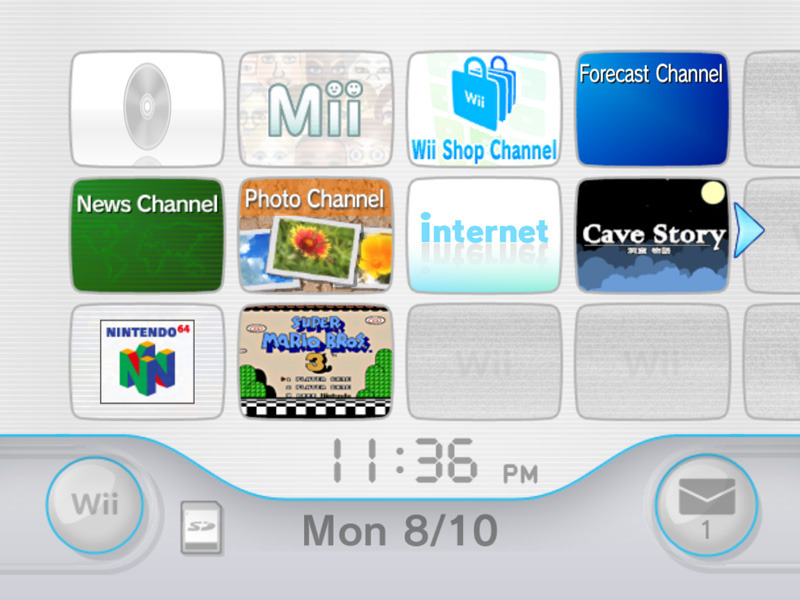
The seventh generation of video game consoles also started using Frutiger Aero-like designs for their
graphical user interfaces. The Wii, aimed at more casual audiences, introduced motion controls, and a
playful interface using skeuomorphism, all this accompanied by soothing music. PlayStation 3 and
PlayStation Portable also featured beautiful interfaces, with Aurora Borealis backgrounds, like
Windows Vista. The Xbox 360 dashboard is also worth noting.
The PlayStation Vita released in 2011 is also iconic, as it perfectly encapsulates the Frutiger Aero
aesthetic with its heavy use of skeuomorphism and floating bubbles as navigation items on the home
screen. Sadly, the console was a commercial failure, which also led Sony to abandon the handheld
console market.
The Wii U released on November 18, 2012, and was the last game console to feature a glossy and bubbly
interface that we associate with Frutiger Aero. Due to a number of factors, it turned out to be a
commercial failure, only selling 13 million units, almost leading Nintendo to bankruptcy.
The Smartphone Revolution (2007)
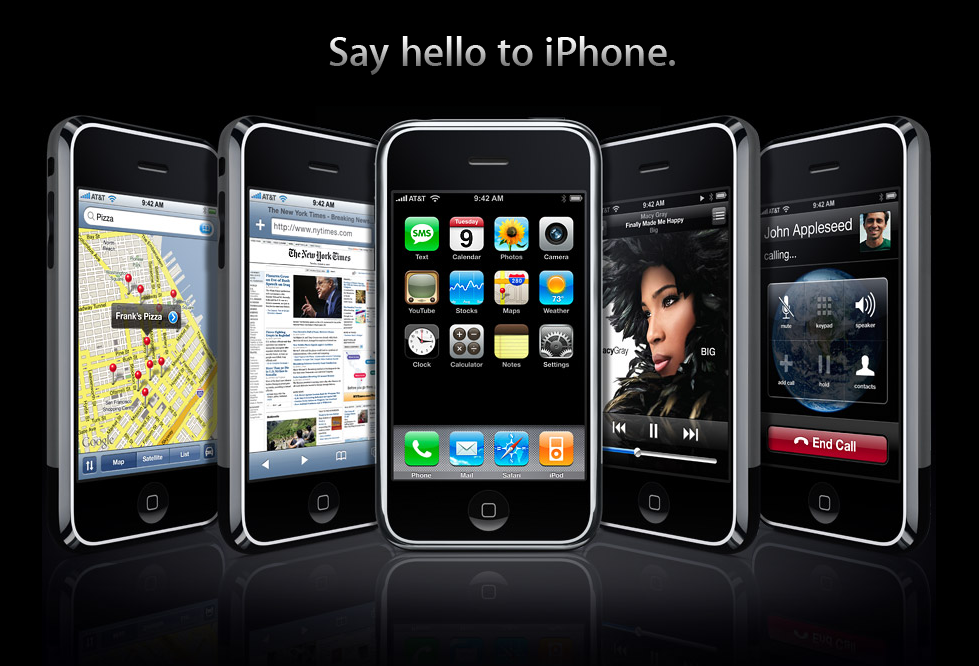
In the 2007 MacWorld event Apple took the world by storm by revealing the iPhone, a phone that
combined iPod, Web Browsing, and Phone, into one singular device, using only touch controls.
At the core of this new phone revolution was Skeuomorphism, a design concept of making items
resemble their real-world counterparts, in an attempt to make the UI more intuitive for people not
yet used to smartphone technology.
This would prove to be hugely influential, with other phone manufacturers soon following with their
own touch devices which also included skeuomorphic interfaces, notably Android phones.
The widespread use of smartphones changed the digital landscape forever, notably on the web, with
Flash websites falling out of favor, soon to be replaced by HTML5. In 2010, Microsoft unveiled
Windows Phone, with the first real flat design interface, which would later inspire Windows 8.
Popularization of Flat Design (2012)
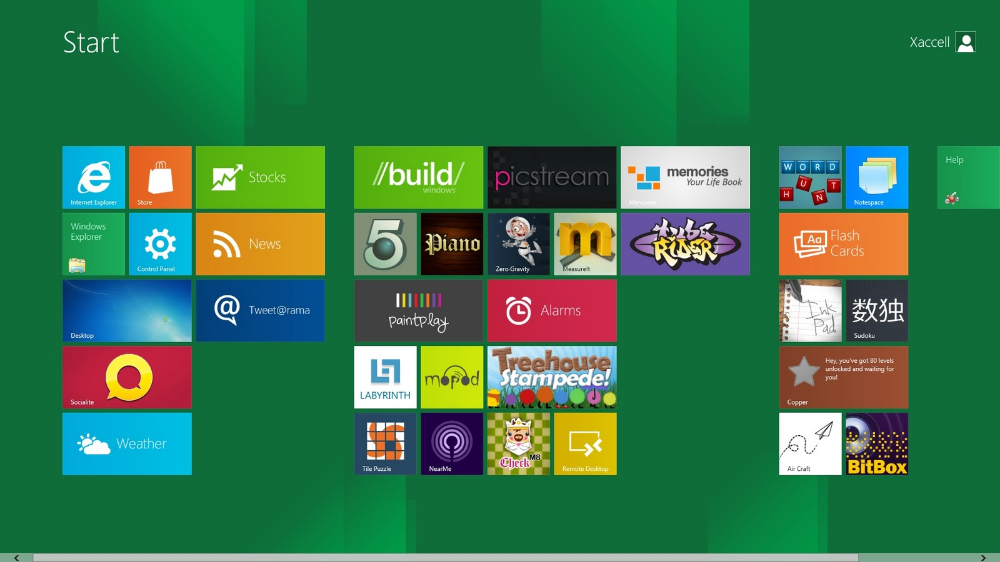
In 2012, smartphones and tablets were growing in popularity, and companies like Microsoft were
starting to worry about the future of desktop computers. Because of this, Microsoft changed their
operating system philosophy in Windows 8, ditching the Aero design language for Metro, featuring flat
tiles with a minimalist look with a touch-friendly interface, as an effort to merge their phone and
computer ecosystems into one.
There was an option to use the classic desktop, but the start button was absent. Due to backlash,
Microsoft brought it back with Windows 8.1 in August 2013, but its market share never surpassed
Windows 7.
Scott Forstall, who led the original software development team for the iPhone and iPad and was a big
proponent of skeuomorphism, was also fired around that time, with Jony Ive taking over iOS design.
Due to this and because of people being more familiar with technology, iOS 7 which released on
September 18, 2013, stopped using skeuomorphism completely.
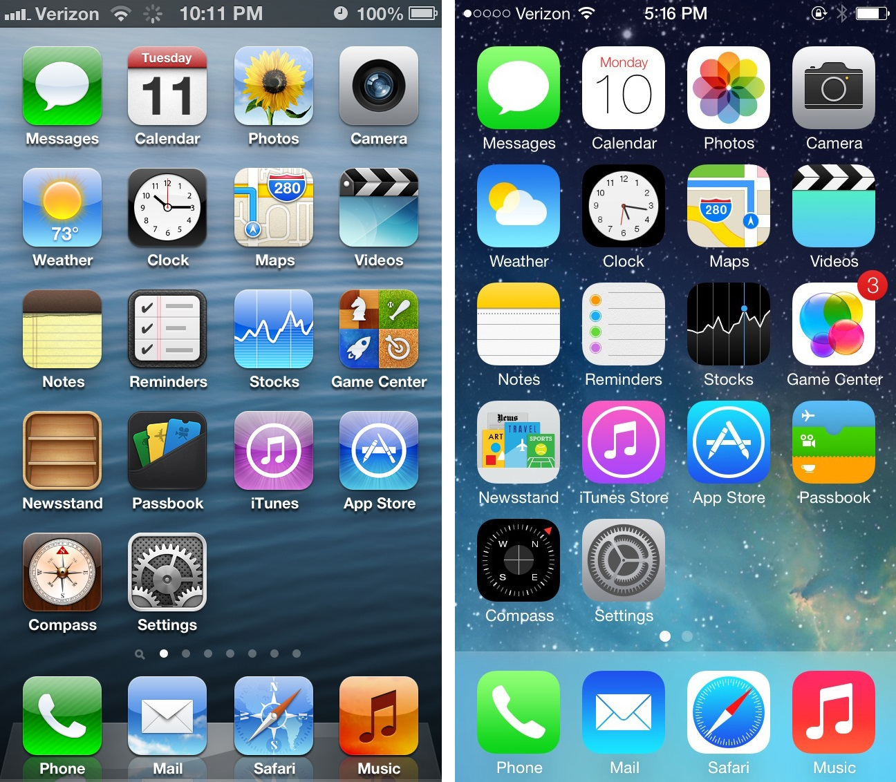
Due to this series of events, Frutiger Aero-like interfaces lost popularity and were gradually
replaced by simpler flatter versions, and less elaborate designs which are cheaper and easier to
produce.
CARI coins the term "Frutiger Aero" (2017)
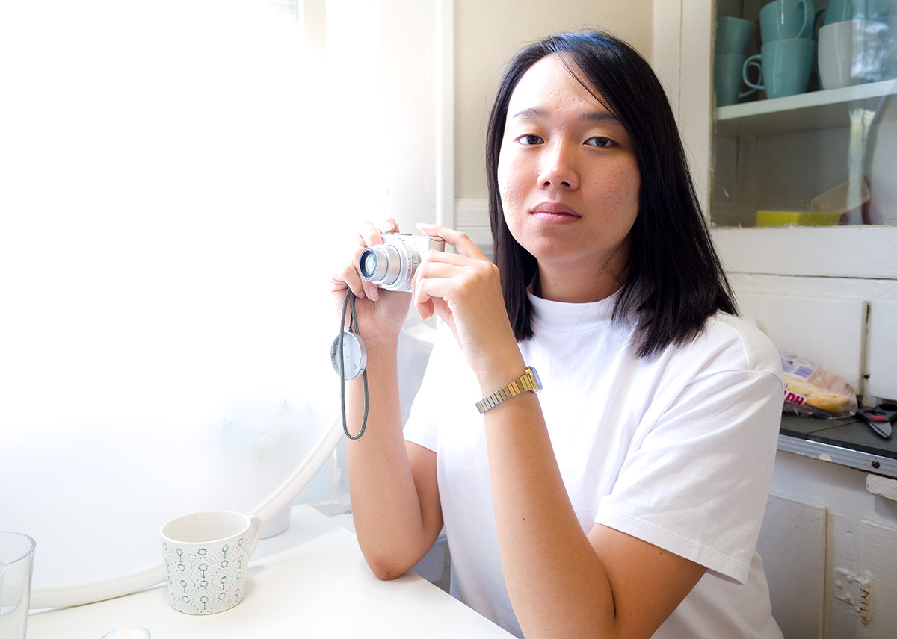
In 2017, Sofi Xian (known mononymously as Sofi) from CARI, which stands for "Consumer Aesthetics
Research Institute", coined the term "Frutiger Aero," and defined it as "the corporate tech aesthetic
popular from approximately 2005 through 2013."
With prominent motifs being:
- Skeuomorphism in UI/UX design
- Glossy design
- Frutiger/humanist sans-serif typefaces
- Tertiary color palettes
- Glassy/transparent materials
- Photographs of aurora borealis
- Bokeh photography
- Macro photographs of grass
The first part of the name "Frutiger" is derived from the Frutiger typefaces, and the second part
"Aero" is derived from the Windows Aero design interface.
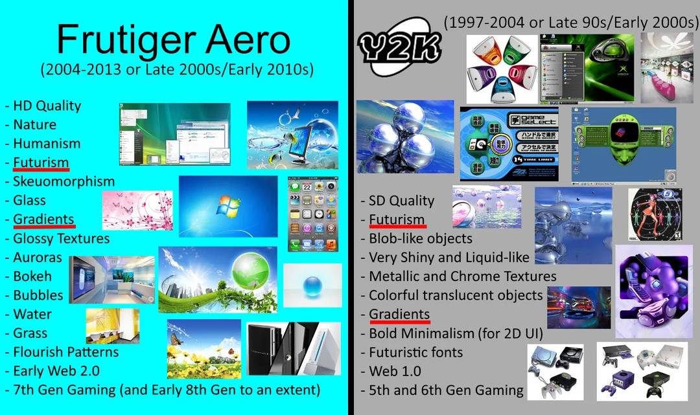
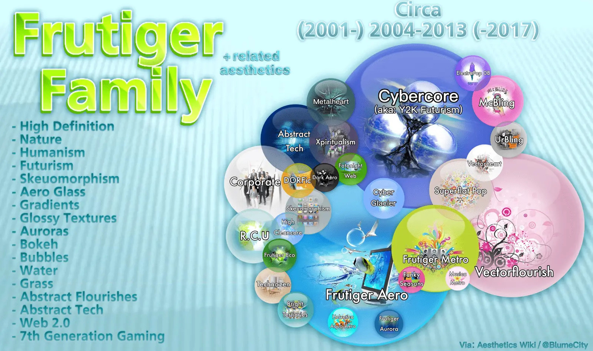
Revival on Social Media (2022-Present)
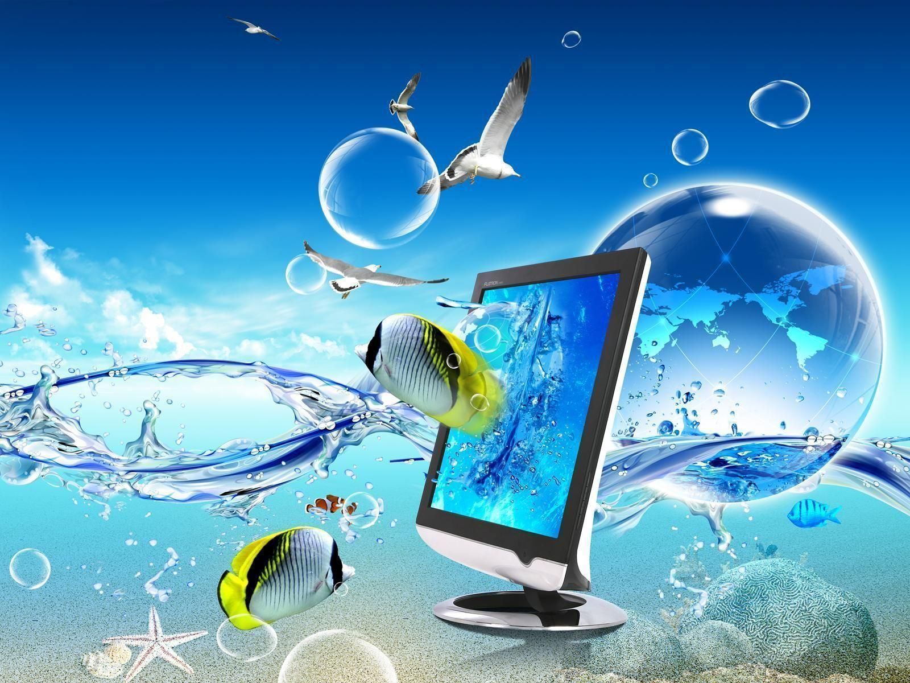
Frutiger Aero gained popularity around 2022 thanks to social media like TikTok, mostly with people
that were kids during the early 2000s, but also younger people that were not around at the time.
New forms of the aesthetic were being made, sometimes mixing other genres like liminal spaces with
Frutiger Aero. This can be seen with the term "The future that they promised us" being used often,
which is a term that is misleading, as such a future was never promised, however, optimism for the
future was present at the time.
There are also other sub-aesthetics or sub-genres of Frutiger Aero, such as:
- Frutiger Eco
- Frutiger Aurora
- Dark Aero
- Technozen
- Helvetica Aqua Aero
Also around that time, a subreddit based around the aesthetic was created and communities on various
social media further helped to re-popularize the aesthetic.
It will probably never become mainstream again as a design trend, however nothing prevents you to
create cool artworks, wallpapers, music, and theme your computer to look Frutiger Aero, to celebrate
the good old days, or simply for the love of art.
Main References / Sources
.png)


.gif)